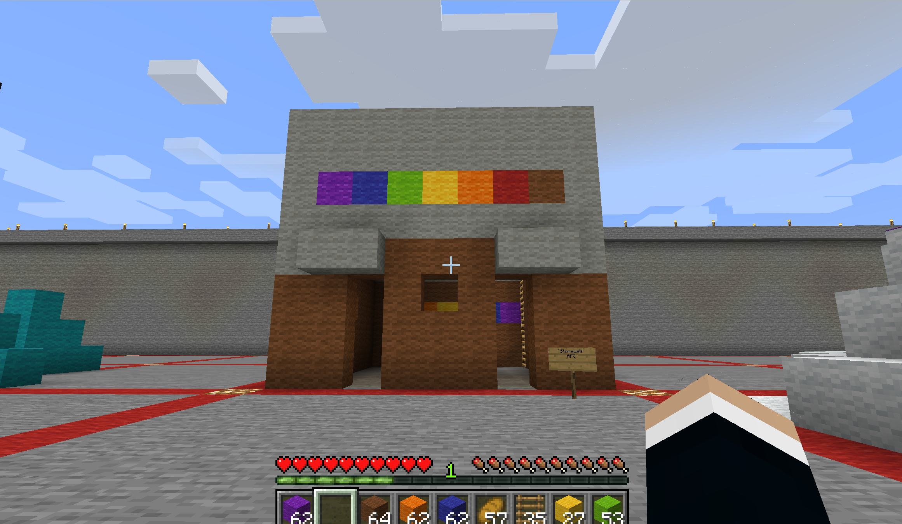
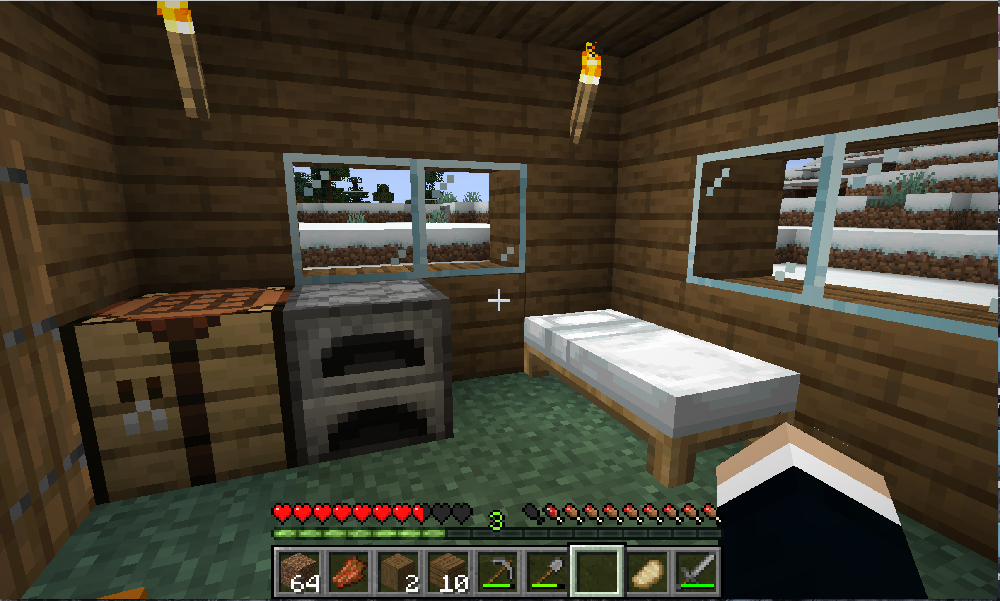

Minecraft
For this project, we got to work in the work.
Minecraft was somewhat familiar to me in this project. I was never a die hard fan of Minecraft but I did enjoy playing it here and there. For this project I created something in the server that was my idea of cultural significance which was again the Stonewall Riots. So, I created the Stonewall Building since thats where the riots took place. Overall, I had a lot of fun and it was nice to go back into Minecraft .
Minecraft was somewhat familiar to me in this project. I was never a die hard fan of Minecraft but I did enjoy playing it here and there. For this project I created something in the server that was my idea of cultural significance which was again the Stonewall Riots. So, I created the Stonewall Building since thats where the riots took place. Overall, I had a lot of fun and it was nice to go back into Minecraft .

